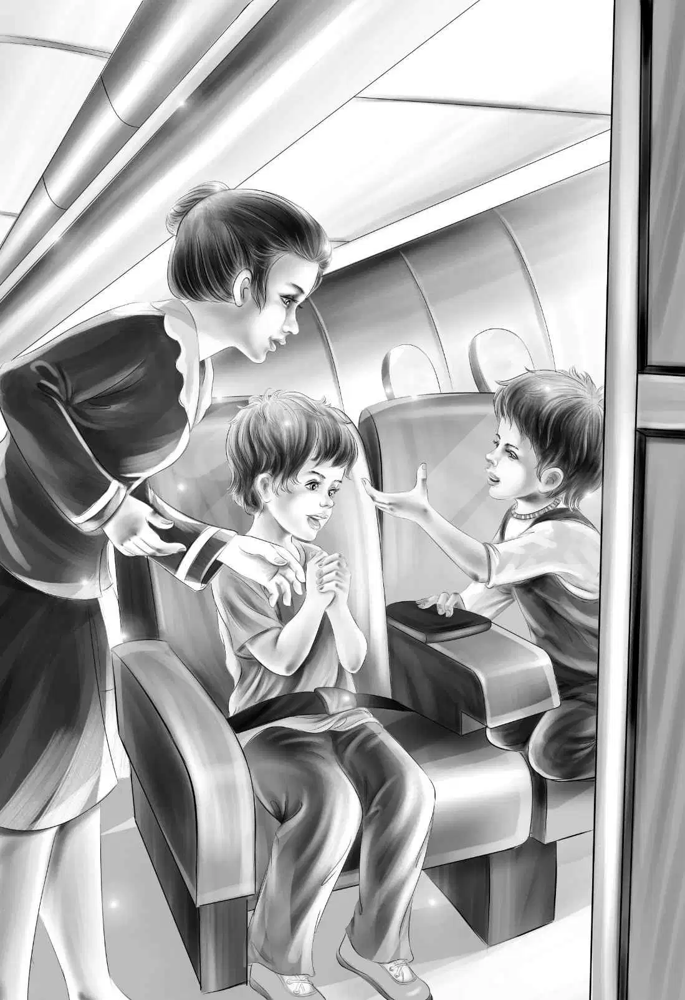

The next week soon came and the Alden family sat eating breakfast. Mr. Alden said,"You will not go to school today,for we leave tomorrow. You have many things to do."
"What?" asked Benny.
Grandfather laughed.He said,"For one thing,Benny,look under your chair."
Benny turned upside down and looked. "Oh,boy!" he cried. He pulled out a little bright red suitcase.
Henry looked under his chair. He pulled out a green suitcase just like Benny's.
Jessie laughed. She knew what she would find. She did find a pretty blue suitcase,and Violet found a violet one.
"From you,Grandfather?" asked Violet.
"No,they are not," said Mr. Alden. "Your cousins Alice and Joe sent them to you. You will each need a small bag for the trip."
"What about old Mike?" said Benny.
"Well,old Mike has one too," said Mr. Alden smiling. "His is dark red and yours is bright red. I hope you boys won't fight over them."
"Oh,no," said Benny. "We never really fight. We just have fun. I can always tell mine because I like bright red. It is like the fire house."
"You can tell yours because it says B. A. on it," said Henry. "Probably Mike's has M. W. on it."
"Yes,that is so," said Mr. Alden. "Today you can pack the bags. Put in only what you really need."
"Our books for one thing," said Jessie. "I can hardly wait to see what is in that new schoolbook."
"Yes," said Mr. Alden. He looked at Jessie and Henry. "Those books are really wonderful. I think your first lesson should be a letter to your teachers. You can say thank-you for all their hard work. Then later you can thank them again,when you see the books."
"What about Mike's writing,too?" asked Benny.
"Look here,old fellow!" cried Henry. "You worry too much about Mike!"
"I think he ought to do what we do," said Benny.
Grandfather patted Benny's shoulder. "You may be sure he will,Benny," he said. "Mike and I have been writing letters to each other for a long time."
"I thought I saw Mike's writing!" said Benny. "I saw it just yesterday when I gave you the mail!"
"That's right," said Mr. Alden. "Mike is packing his red suitcase this very day. When we land at Chicago,Mike will be there waiting."
It was very exciting to take the plane. It was a jet. Stairs were put in place against the airplane door.
The Aldens went up the stairs with their bags.
"The first time we ever went on a plane!" cried Benny to the stewardess.
She laughed. "You'll like it," she said.
Mr. Alden had been on a plane many times. He could answer all Benny's questions. At last the plane rose in the air. They were off!
"I'll bet old Mike will be scared!" said Benny.
"We'll soon see," said Mr. Alden. "We will see Mike in just a short while."
When the plane started to go down,they all looked out of the windows. Suddenly Violet said,"There's Mike with his dark red bag!"
"He doesn't look scared at all," said Jessie. "And do try to be nice to him,Benny."
"Oh,of course I will," said Benny. "He'll love this jet! I'll tell him it will say woosh! and we'll be there."
Mike was delighted to see Benny again. The two boys sat together and talked all the time. Mr. Alden had a seat to himself and slept.
"Did you get a schoolbook,Mike?" asked Benny.
"Yes,I have it right in my new bag.Your grandfather asked my teacher to write it for me. It has lots of pictures in it,too."
"There!You looked,Mike!Grandfather said not to look until we were on the boat!"
"Careful,Ben!" said Henry.
"I didn't look very much," said Mike. "I just saw one picture of a big fish."
"A fish!" said Benny. "What a schoolbook! I suppose mine is different."
Soon they had lunch. Then the plane began to go down again.
"So many exciting things," said Jessie. "We don't have time to think."
"You will have plenty of time when you get on the ship," said Mr. Alden.
Jessie was right and Mr.Alden was right. They landed. They said good-by to the stewardess. Mr. Alden got a car to take them to the ship. The ship's name was the Sea Star,and they were soon on it.
"Here we are!" said Mr. Alden. "And here is your friend,Lars!"
Lars was in uniform.
"You look different,Lars," said Benny.

"Yes,my lad. I'm a sailor now. I'm still First Mate on this ship until we get to the island. This is Captain Brown."
The Captain shook hands with them all. He seemed to know all their names.
"This ship is very big,isn't it,Grandfather?" said Benny.
Grandfather laughed. "Yes," he said. "It is not a passenger ship. It is a big freighter,but it's very clean and very safe. And it will take us where we want to go. Not many ships can do that,for very few ships go to that island."
"We want to go to a beautiful desert island,Captain," said Mike.
"And that's where we will take you," said Captain Brown. "You are the only people on the ship,except the crew. Lars will show you where you eat and sleep."
The boat rocked gently at the dock. Jessie and Violet had one very small room. Benny and Mike had another very small one. Henry and Mr. Alden each had a room to himself.
"We can take only eight people," said Lars. "The cargo takes up a lot of room on the ship." There was still room on deck for seven long chairs.
Soon there were six people in the chairs. The men shouted and threw the ropes over on the deck. The freighter began to move.
"Here we go!"sang Benny and Mike together.
They were chugging under the beautiful Golden Gate bridge into the great Pacific Ocean!